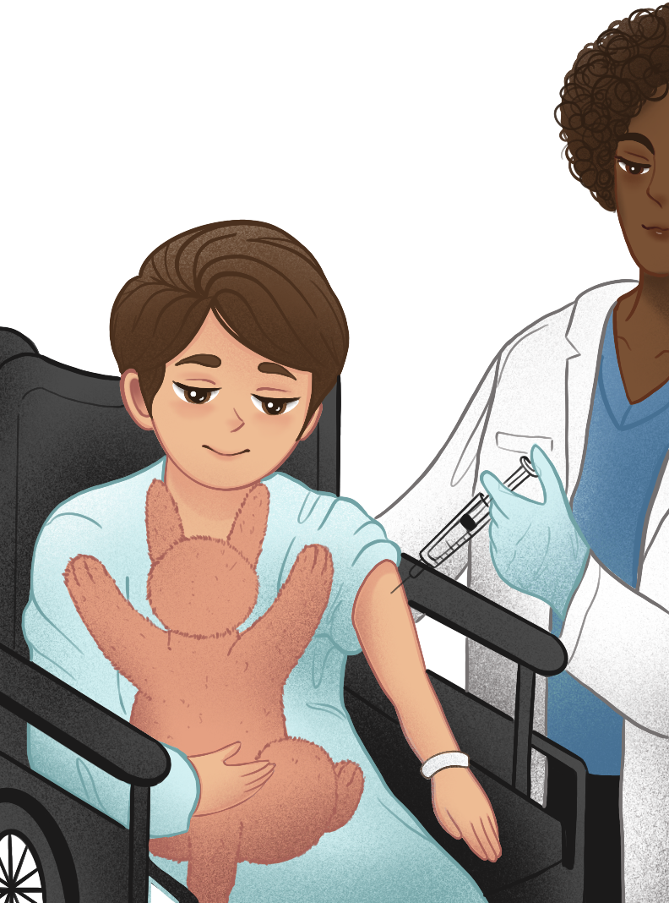
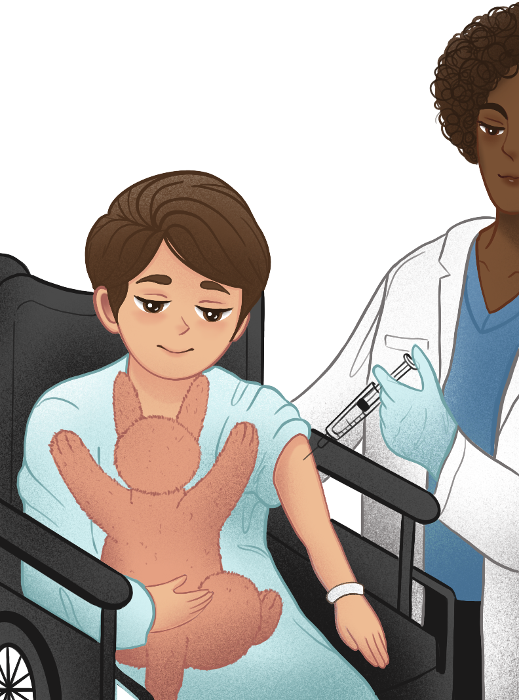

Roo
a friend for yoo
Our Mission
We believe that the hospitalization experience should not be stressful and unpleasant for children, so we engineered a robotic companion that can enhance the well-being of children in hospitals.
Meet Roo, our companion that positively impacts emotions by learning the child’s behavior through artificial intelligence and machine learning. It is a therapeutic companion that can track a child’s behavior as the child plays with it and provides predicted responses of comfort through physical and vocal stimuli. Roo is programmed to comfort their friend before potential outbursts.
 

History
PARO - A therapeutic robot baby seal intended have a calming effect on and elicit emotional responses in patients of hospitals.
Pekee - A robot aimed for emotional and therapeutic needs and can recognize individual differences among the children to adapt their own behaviour accordingly.
PLEO - A robotic dinosaur companion that acts like a living pet dino for children.
Huggable - A teddy bear controlled by nurse to communicate with children during checkups to reduce the stress of the child.
Pepper - A semi-humanoid robot designed with the ability to read emotions, provide assistance, and entertainment.
ROBEAR - A care robot that performs tasks in hospitals, such as lifting a patient or helping patients stand.
SAM - A care robot that provides check ins and non-medical care for elderly in nursing homes.
Pillo Health - An automated medication management and smart home healthcare device.
MIKO - A companion robot aimed at kids. It can talk, respond, educate and entertain.
Roo - A portable health companion that can talk and comfort 5-12 year olds.
Features
Roo can recognize a child’s emotions with the use of cameras located in its eyes. These cameras are able to detect facial expressions and learn how to respond to these reactions with the use of artificial intelligence. Based on the emotions expressed, Roo will react with programmed movements, such as gesturing for a hug to comfort the child. Roo has programmed questions and responses which provide the child a friend they can talk to. Additionally, the child’s reactions and responses (transcript) are recorded on a cloud service so that healthcare professionals have access. With this information, the medical staff is aware of how the child reacts in different situations.
Microphone: records and transcribes audio
Cameras: facial expression and motion detection
Speaker: plays audio
Data Storage: process, stores, and sends information
Stories
Ashe
The nurse gave me Roo and I had Roo for a little while now. Roo is my best friend. She is so cute! I love her! She is always there for me! Roo makes me feel better. I don’t feel scared when I meet with the doctor because Roo is with me. Roo knows how I feel, and she asks me questions. She always makes sure I feel safe. She tells me jokes and tells me nice things. I bring Roo everywhere with me. I put my candy in Roo’s belly. I also write her notes! I put that in her belly, too. I really like Roo because Roo is really soft, and I like cuddling with her. And she talks to me when I’m feeling sad and hugs me when I’m nervous. I feel a lot better because I can play with her at any time!
Joy
Roo is very helpful because it is always there for the child. The medical staff are busy and can't constantly provide attention to the children. Roo also helps with keeping track of the child’s behavior so the staff can spot any abnormal changes. The data collected from the kangaroo helps with understanding of the child’s psychological state and how they react in different situations. Roo is also very helpful because it calms the child during check ups and shots. The child holds Roo during their medical procedure, and they feel less anxious. When they get too scared, Roo comforts them with hugs and puts them at ease. Hospitals should have Roos in their pediatric unit because the robots support the patients and staff. When the staff hands the child a Roo, their face lights up and it is wonderful to see them so happy!
FAQ
Why should we choose Roo?
Roo is a portable compantion robot designed to provide comfort to children who feel anxious and uneasy. Roo will be there for the child even when adults or other children are unable to.
What is Roo made out of?
Roo is made from plush fabric and soft materials that is durable and machine washable. The mechanisms inside are flexible and light, making it the safe for everyday play.
Where is the data collected by Roo?
The data collected is stored in the hospital's cloud services accessible only to hospital nurses and doctors. Family members can request for this information at anytime.
Team
Maivi
Nicole
ROOBOT was started by Maivi and Nicole, designers from Silicon Valley who want to make a change in the healthcare industry. With their team of engineers, they created Roo, the comfort robot that helps hostitalized childern feel at ease in the tough hostpital setting. Being environmentally conscious, they carefully chose light, durable, and recyclable materials for their robot. Currently, Roo is only available for children's hospitals, but they hope to make Roo more accessible for everyone in the future.